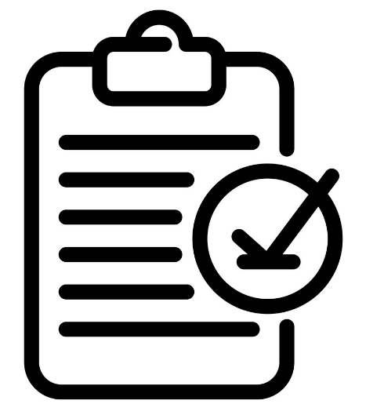

Career Development Resources
Career Development ResourcesTell Me About Yourself (TMAY)
Interview Introduction Guide - Help You Stand Out in Every Interview Stage
CAREER DEVELOPMENT OFFICE | University of Michigan Career Center
Start any interview (at any stage) strongly by highlighting your achievements and telling a comprehensive personal story concisely.
TMAY ("Tell Me About Yourself") is one of the most frequently asked questions in interviews, and it is generally the first question posed. Your response should highlight your educational, technical, or business-related achievements.
It is expected (and reasonable) to reference previous application materials such as your resume or cover letter. However, responses should be tailored to emphasize how you will meet the organization’s needs—each interview should be slightly different.
Think of this answer as an extended version of an elevator pitch and a preview of the rest of the interview. Ask yourself: What key messages do you want to convey about your ability to succeed in the role and your interest in it?
A professional job interview scene—preparing a strong TMAY helps create a positive first impression.
TMAY Key Components
Adapt your elevator pitch and personal narrative to highlight why you are the best candidate for the job/internship to the interviewer.
| Component | Detailed Content |
|---|---|
 Who are you Who are you |
Interviewers will likely speak with many candidates—remind them who you are: ● Restate your name ● Include a descriptive detail about your identity (e.g., your academic program or professional focus) Pro Tip: If you go by multiple names, let the interviewer know which one you prefer. |
 Past and Current Work Past and Current Work |
This content may have already been submitted via your resume or cover letter—you can discuss the same items. These experiences helped you secure the interview, so interviewers will likely want to learn more: ● Highlight key themes and common threads in your experiences ● If you choose to share examples, keep them brief (to preview deeper discussions later) |
|  Wrap up |
Conclude your "Tell Me About Yourself" response strongly to signal you are finished and deliver a clear takeaway or future vision: ● Look to the future: Help the interviewer envision you in the role—how do your goals align with the position? What contributions do you hope to make? How will you grow? ● Three key points: Identify three critical things you want the interviewer to learn about you throughout the interview |
Pro Tips
- Focus on what interests the interviewer: Demonstrate the qualities they are seeking
- Your areas of expertise/interest should align with the company's needs
- Your internship/project experience should describe achievements related to required skills for the role
- Your additional strengths should reflect and match those listed in the job description
- Demonstrate your enthusiasm for the position
- Keep your response to 2 minutes or less
Visual breakdown of the TMAY structure—follow this framework to keep your introduction organized.
UMSI Career Resources to Strengthen Your TMAY
- Indeed Career Advice: Explore TMAY examples tailored to students and entry-level candidates.
- CDO Canvas Site: Access interview prep guides, resume templates (with course project sections), and portfolio resources.
- UMSI Resume Guide: View sample resumes with course project examples (e.g., "Developed a high-fidelity Figma prototype for a nonprofit website redesign").
- CareerLink: Schedule career coaching appointments to practice TMAY, explore jobs/internships, and register for workshops.
Program-Specific TMAY Examples with Course Projects
Course projects vary by academic focus—below are tailored TMAY examples for three common UMSI tracks (UX Design, Information Analysis, Data Science). These examples highlight how to align project details with industry-specific roles, making your narrative more relevant to recruiters.
UX Design Track (Target Role: UX Design Intern)
"Hi, I’m Zoe Kim—I’m a junior in UMSI’s Information Science program with a focus on UX Design, and I’m excited to share how my course projects align with your intern role."
Last semester, I took "Intro to UX Design" and worked on a client-based course project for GLANSIS, a local environmental organization. Their website was outdated and hard for users to find conservation resources, so my task was to redesign the site’s information architecture and create high-fidelity prototypes.
I started by conducting 8 user interviews to identify pain points—users mentioned struggling to navigate the "Volunteer Opportunities" section—and created user personas to guide design decisions. Using Figma, I developed 3 wireframe iterations, then ran usability tests with 6 participants to refine the prototype. I also collaborated with the GLANSIS team to ensure the design matched their brand guidelines—this meant adjusting color schemes and typography to align with their mission of environmental advocacy.
The final deliverable was a fully interactive Figma prototype and a 10-page design brief explaining my process. The GLANSIS director told me they plan to use my prototype to secure funding for the website redesign. This project taught me how to balance user needs with client goals— a skill I know is critical for your UX Design Intern role, where you mention collaborating with product teams to iterate on designs.
I'm particularly drawn to your company's focus on accessible design—during the GLANSIS project, I ensured all text met WCAG contrast standards and added screen reader compatibility notes. I’m eager to bring this user-centric, accessible mindset to your team and learn from your work on consumer app design.
Information Analysis Track (Target Role: Business Intelligence Intern)
"Hello, I'm Raj Patel—I'm a senior in UMSI’s Information Analysis program, and I want to share how my course projects have prepared me for your Business Intelligence Intern role."
This semester, I'm enrolled in "Information Analysis for Organizations," where my team and I worked on a project for a local small business association. The association wanted to understand why 30% of their member businesses had not renewed their memberships, so we were tasked with analyzing survey data and presenting actionable recommendations.
I led the data cleaning phase—we had 500+ survey responses with missing values and inconsistent formatting—using Excel and SQL to standardize the data. Then, I used Tableau to create visualizations: a heatmap showing which membership benefits were least used, and a bar chart comparing renewal rates by business size. I also conducted a thematic analysis of open-ended survey responses, identifying "lack of networking opportunities" as a top complaint.
We presented our findings to the association's board, and they approved a pilot program for monthly virtual networking events based on our recommendation. This project taught me how to translate raw data into business insights—exactly what your intern role entails, as you mentioned supporting the BI team in creating client reports.
I'm also proficient in Tableau, which your job description lists as a required skill. During the project, I created dynamic dashboards that let the association filter data by business type—this experience will help me contribute quickly to your team’s work on retail client analytics.
Data Science Track (Target Role: Data Science Intern)
"Hi, I'm Liam Scott—I'm a junior in UMSI's Data Science specialization, and I’m excited to talk about how my course projects align with your Data Science Intern role."
Last semester, I took "Natural Language Processing for Health Data," where I worked on a course project focused on social media mining for healthcare applications. The goal was to classify 25,672 tweets about medication adverse reactions into 5 categories (e.g., "side effect: nausea," "dosage issue")—a task that mirrored real-world pharmacovigilance work.
I started by preprocessing the text data: removing stopwords, tokenizing tweets, and using word embeddings to convert text into numerical features. Then, I implemented two models in Python: a Support Vector Machine (SVM) and a Convolutional Neural Network (CNN). After hyperparameter tuning (using GridSearchCV), the CNN achieved an F1 Score of 0.53—only 0.07 lower than the expert researcher baseline. I also wrote a 15-page report explaining my methodology and comparing model performance.
This project taught me how to apply NLP techniques to health data, which aligns with your intern role's focus on analyzing patient feedback for pharmaceutical clients. Your job description also mentions using Python for model development—during the project, I used libraries like Scikit-learn, TensorFlow, and NLTK, which I know your team uses.
I'm also passionate about ethical AI—during the project, I checked for bias in the training data (e.g., overrepresentation of tweets from younger users) and adjusted the model to be more inclusive. I’m eager to bring this ethical mindset to your team’s work, as you prioritize responsible data science in your company values.
TMAY Practice Tools & Next Steps
Crafting a strong TMAY takes practice—use the resources below to refine your narrative, with a focus on integrating course projects effectively. These tools are aligned with UMSI’s career support offerings (from the BSI presentation) to ensure you’re using trusted, program-specific guidance.
TMAY Worksheet: Course Project Integration
Fill in the blanks below to draft your initial TMAY—focus on 1-2 key course projects that align with your target role:
- Introduction (Who are you?): "Hi, I'm [Your Name]—a [Year/Semester] [Program/Track] student at UMSI. I'm interested in [Target Role/Industry] because [1-2 sentences about your motivation], and my course projects have helped me build skills relevant to this field."
- Course Project 1 (ACR Framework): "Last [Semester/Year], I worked on a [Course Name] project where [Context: What was the goal? Who was the client/audience?]. I [Action: What did you do? What tools/methods did you use?], which resulted in [Result: What did you achieve? What did you learn?]."
- Course Project 2 (Optional, if relevant): "This [Semester/Year], I'm working on a [Course Name] capstone project focused on [Context]. I'm currently [Action: e.g., leading data collection, designing prototypes], and I’ve already [Result: e.g., created a draft dashboard, conducted user interviews]."
- Link to the Role: "These projects have prepared me for [Target Role] because [1-2 sentences linking skills to job requirements—e.g., I used Figma to create prototypes, which matches your need for UX design experience’]."
- Closing: "I'm excited about [Company Name] because [1 sentence about company values/mission], and I'm eager to contribute my [Key Skill from Projects] to your team."
Save your draft in a Google Doc—you can share it with a CDO career coach during a coaching appointment for feedback!
UMSI CDO Practice Opportunities
- 15-Minute Drop-In Sessions: Available daily through December 15 (and resuming after winter break) at the UMSI CDO. Bring your TMAY draft and practice with a coach—they’ll help you refine course project details and align your narrative with your target role.
- Mock Interviews: Schedule a 30-minute mock interview via CareerLink. Coaches will ask TMAY and follow-up questions (e.g., "Tell me about a course project challenge") and provide feedback on your structure, tone, and use of project examples.
- Peer Practice Groups: Join the "UMSI Interview Prep" group on Canvas (under CDO Resources) to connect with classmates. Share your TMAY draft and practice with peers—they can offer insights on how to make course projects sound more impactful.
Additional Learning Resources
- CDO Canvas Module: TMAY & Course Projects: Watch short videos of UMSI students practicing TMAY with course project examples, plus downloadable templates for drafting your narrative.
- U-M Career Center Interview Guide: Read tips on answering TMAY and behavioral questions, with a section on highlighting academic projects for entry-level roles.
- Industry Webinars: Register for the "Leveraging Course Projects in Interviews" webinar (January 10, 2024) via CareerLink. UMSI alumni will share how they used academic projects to land internships and full-time roles in UX, data science, and information analysis.
Key Takeaways
- Course projects are your secret weapon: For students without internships, they're the most relevant way to showcase skills—use the ACR/STAR frameworks to structure details clearly.
- Transparency is critical: Always label projects as "course," "capstone," or "client-based academic" work—never misrepresent them as paid jobs, especially for immigration compliance.
- Align with the role: Tailor your TMAY to the job description—highlight course project skills that match the employer's needs (e.g., Figma for UX roles, Python for data roles).
- Practice makes perfect: Use CDO drop-ins, mock interviews, and peer groups to refine your narrative—feedback will help you make course projects sound more impactful.
- Leverage UMSI resources: The CDO Canvas site, CareerLink, and January career fair prep workshops are designed to help you succeed—take advantage of them!
Your TMAY is the first step to showing employers you're the right fit—with course projects at the center, you'll stand out in every interview!